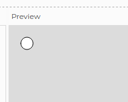
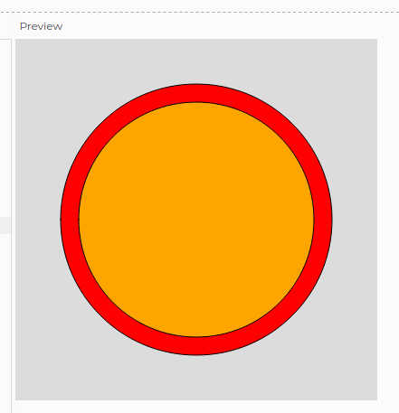
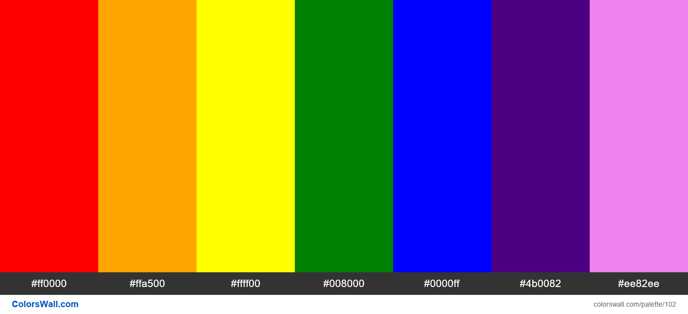
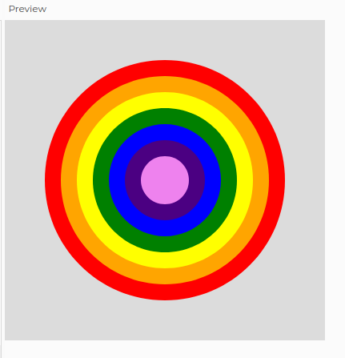
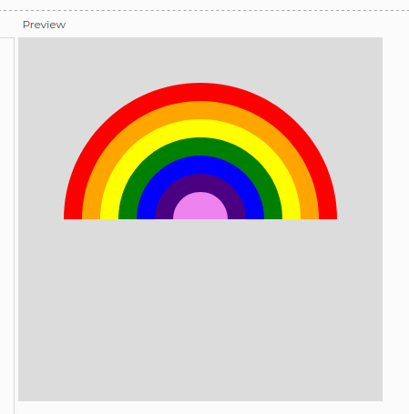
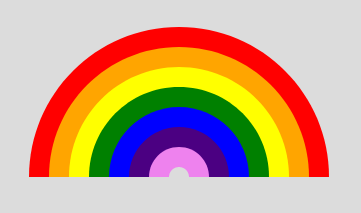
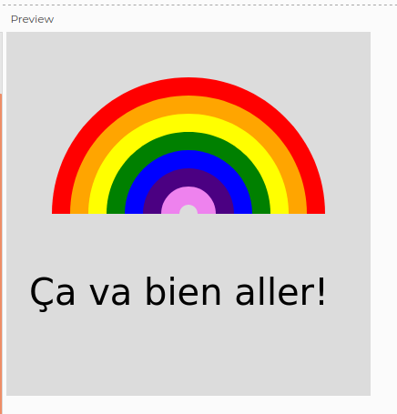

Le but de ce mini défi est d'explorer les formes et les couleurs de la librairie p5.js pour dessiner un bel... arc-en-ciel comme celui-ci.
Commencer !Le but de ce mini défi est d'explorer les formes et les couleurs de la librairie p5.js pour dessiner un bel... arc-en-ciel comme celui-ci.
Commencer !Première chose avant de commencer à travailler sur n'importe quel projet p5.js: connecte-toi à ton compte en cliquant sur "Log in".

Si tu n'as pas de compte p5.js, il faut le créer ainsi:
Clique sur ce lien https://editor.p5js.org/
Par défaut, l'éditeur p5.js a nommé mon projet "Complete tracker". C'est marrant, mais pas très descriptif de mon projet. Je vais le renommer "Ça va bien aller!"
Toi aussi, renomme ton projet en cliquant sur le petit crayon .

Il y a plusieurs façon de réussir ce défi! Je vais t'en montrer deux, mais tu peux en trouver d'autres! L'important, c'est de toujours commencer avec la façon la plus simple et d'y aller étape par étape.
Chaque étape doit être toute petite et tu dois t'assurer que le code fonctionne avant de passer à la prochaine étape!

Une fois que leur code fonctionne, les programmeuses et programmeurs (je vais les appeler les "devs") essaient alors de le refactoriser, c'est-à-dire de réduire sa taille et le rendre plus élégant. Ce n'est pas facile... et honnêtement, ce n'est pas le plus important à ce stade-ci!
On y va! Notre première toute petite étape, c'est d'arriver à dessiner un cercle rouge sur notre canvas.
RAPPEL: la taille de ton canvas est déterminée dans la fonction setup() qui ne s'exécute qu'une seule fois. La fonction draw(), quant à elle, est exécutée plusieurs fois par secondes.
Pour dessiner un cercle, tu auras besoin de la fonction en p5.js circle(). Dans la fonction draw(), essaie ceci:
function setup() {
createCanvas(400, 400);
}
function draw() {
background(220);
circle(30, 30, 20);
}
Pour lancer notre programme, rappelle-toi: il faut cliquer sur le bouton "Play".
Note que notre canevas (l'espace Preview) est devenu gris pâle et un petit cercle blanc est apparu:
Pas mal! Maintenant, change la couleur du cercle. Tu peux t'inspirer de l'étape 11 du défi des prédictions. La fonction fill() pourrait être utile...
Notre cercle rouge est petit, et proche du coin gauche en haut de notre canvas. Pourquoi? Comment faire pour centrer le cercle et lui donner un plus grand diamètre?
Il faut jouer avec les paramètres de la fonction circle(). Ce sont les nombres 30, 30 et 20 qui sont à l'intérieur des parenthèses de la fonction.
Pour comprendre comment fonctionnent les fonctions (instructions) en p5.js, il faut lire la documentation.
😱
Eh oui... même en programmation, il faut lire... 🤓
On a de la chance car la documentation de p5.js est bien faite! Le seul hic, c'est qu'elle est en anglais...
Voici donc une petite traduction. Pour la fonction circle(), les trois paramètres sont x, y et d.
x et y , ce sont les coordonnées du centre du cercle, tandis que d, c'est le diamètre du cercle.
Si j'écris circle(200, 300, 50) cela veut dire que mon cercle aura comme coordonnées d'origine (200, 300). Le diamètre sera de 50.
Comment fonctionnent les coordonnées dans la librairie p5.js? Pas comme dans Scratch où le point (0, 0) se trouve au beau milieu de la scène:

En p5.js, l'origine se trouve plutôt en haut à gauche:

En jouant avec les paramètres de la fonction circle(), tu devrais arriver à un résultat comme ceci:

circle(200, 200, 300);Dessine un cercle orange à l'intérieur du cercle rouge, comme ceci:
Pour que le cercle orange soit plus petit que le cercle rouge, il faudra que son diamètre soit plus petit.
fill('red');
circle(200, 200, 300);
fill('orange');
circle(200, 200, 260);Tu peux maintenant faire toutes les autres couleurs de l'arc-en-ciel:
 Si tu veux te débarasser de la petite ligne noire entre les couleurs, tu peux utiliser la fonction noStroke()
Ton arc-en-ciel ressemble à une cible, non?
Pour n'avoir que la moitié du cercle, on va tout simplement cacher la moitié basse du cercle par un rectangle de la même couleur que notre canvas.
Peux-tu trouver dans la documentation une fonction pour dessiner un rectangle?
Cherche la fonction rect()
Quelles sont les bonnes dimensions de ton rectangle?
fill(220);
rect(0, 200, 400, 200);
Ça y est, on a notre demi-cercle!
Le centre de notre arc-en-ciel est complètement violet. Comment faire pour obtenir ceci?
Et finalement... notre message: Ça va bien aller! Tu peux t'inspirer de l'étape 5 du défi des prédictions pour ajouter du texte à ton canvas.
Mon code fait 28 lignes. Ce n'est pas si mal! Mais on pourrait faire plus court en refactorisant.
Pour refactoriser, il faut trouver les lignes de code qui se répètent ou se ressemblent beaucoup.
Dans ce programme, note que tu utilises souvent la fonction fill(), suivie de la fonction circle(). La seule chose qui change, se sont les paramètres de couleur et de diamètre.
Ce qu'on peut faire, c'est encapsuler ces deux instructions dans une nouvelle fonction qu'on va définir nous-même à après la fonction draw():
function drawRainbowArc() {
fill('red');
circle(200, 200, 300);
}
Dans la fonction draw(), tu peux maitenant utiliser ta nouvelle fonction:
function draw() {
background(220);
noStroke();
drawRainbowArc();
// Le reste de ton code...
}
Le problème, c'est que cette fonction est très limitée. Elle ne fait que le premier arc de notre arc-en-ciel. Pour rendre la fonction plus flexible, il faut lui donner... des paramètres!
function drawRainbowArc(color, diameter) {
fill(XXXX);
circle(200, 200, YYYY);
}
À ton avis par quoi doit-on remplacer les XXXX et YYYY?
Tu peux maintenant utiliser (appeler) ta fonction avec les paramètres que tu veux:
function draw() {
background(220);
noStroke();
drawRainbowArc('red', 300);
drawRainbowArc('orange', 260);
// Le reste de ton code...
}
J'ai refactorisé mon code pour qu'il ne fasse "que" 22 lignes. Peux-tu en faire autant?
Voici quelques pistes:
arc() pourrait t'aiderforEach() pourrait t'aider...draw()?